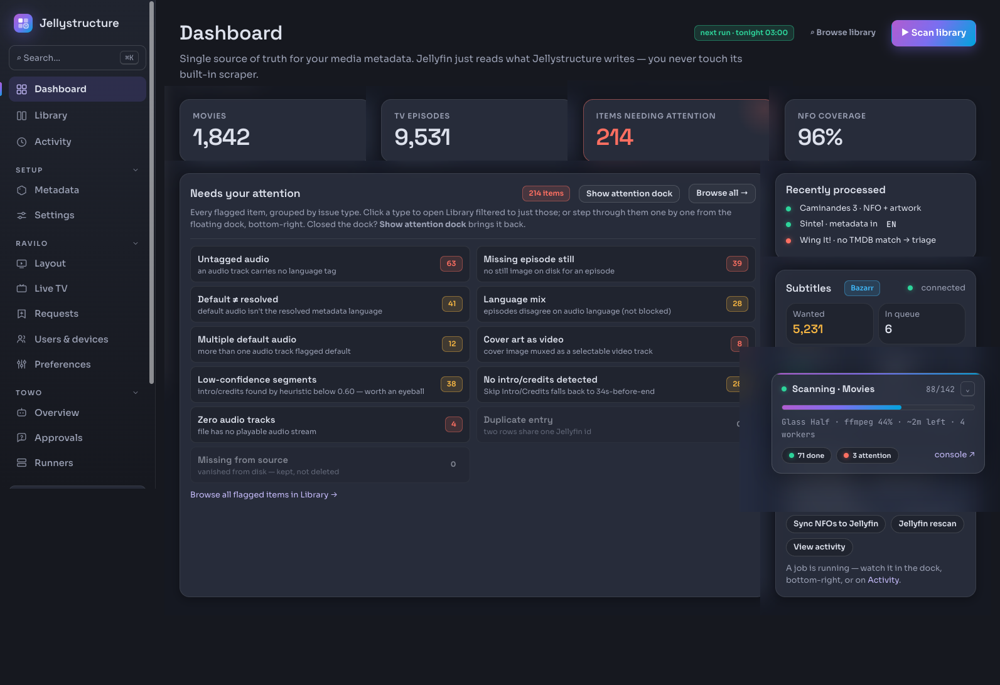
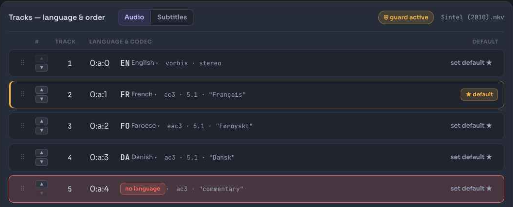
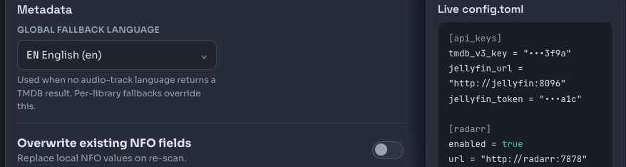
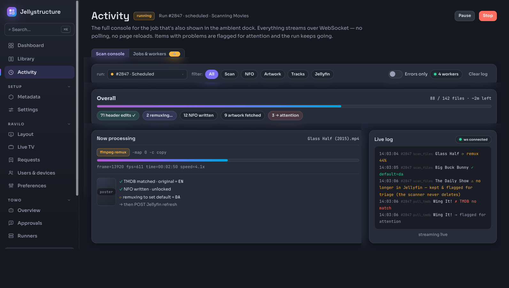
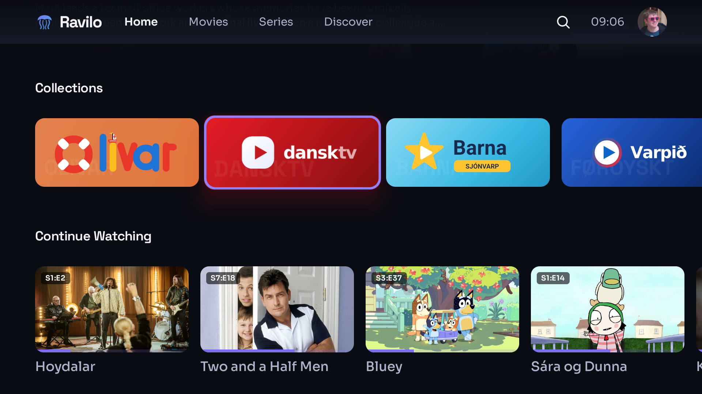
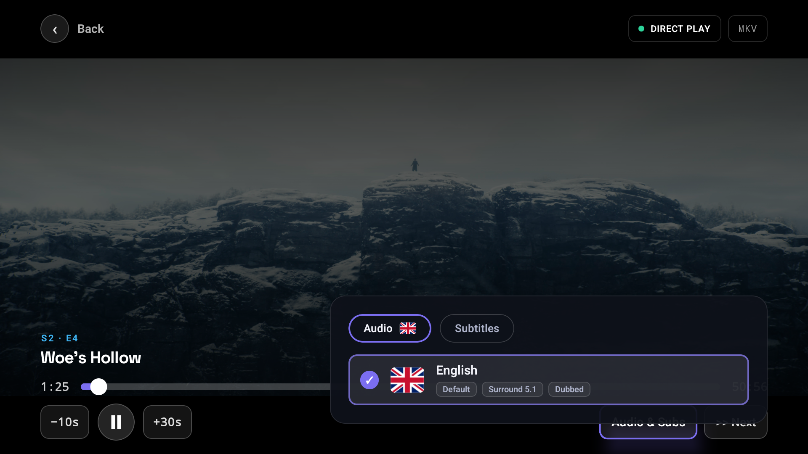
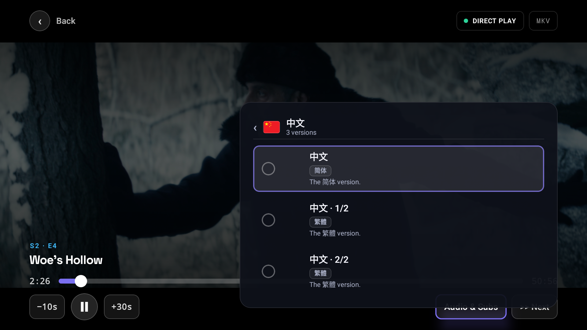
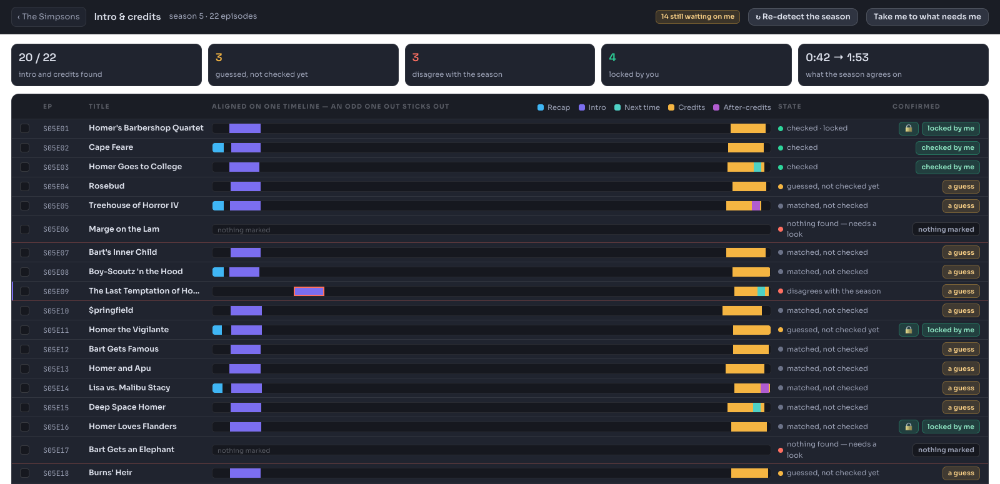

Internal engineering talk
One backend, four clients, 404 numbered phases — every one of them specified in writing before it was built.
initial-idea.md · 1,865 bytes · committed first
“A nice web system that can be hosted via docker compose, built with Kotlin native on backend and Kotlin wasm on frontend — proper DOM things instead of some canvas.”
“This system should be a replacement for the existing metadata that Jellyfin provides, so you shouldn't need to use refresh metadata ever.”
“if a file has the languages 0 → Faroese, 1 → Danish … first check Faroese, if it's not there check Danish, then the global fallback”
“We want to build this project in multiple steps, so let's write the requirements and all the different phases.”
That last sentence is the origin of everything in Part 2. The method was in the brief before the first line of Kotlin.
Jellyfin streams files well and understands them poorly. That split defines both halves.
Backend + admin
Client
Neither half replaces Jellyfin — it still does the streaming.
| Layer | Technology | Note |
|---|---|---|
| Backend | Kotlin/Native · linuxX64 · Ktor | One native binary, no JVM on the host |
| Admin frontend | Kotlin/WASM | DOM-based — no Canvas, no Compose for Web |
| TV · phone · web | Compose Multiplatform | One UI codebase across three form factors |
| Extra target | ravilo-tizen | Samsung TVs, built from the same shared module |
no response compression at all · past ~1,000 open connections the whole server dies
Kotlin/Native is a thin ecosystem. Ktor's native networking can only watch a fixed number of connections at once, and going one over doesn't refuse a request — it takes the process down. Constraints you rediscover by crashing are constraints you should have written down.
Counted from the repository at this week's main, not estimated.
Where the weight sits
ui/MediaDetail.kt 262 KB screens/PlayerScreen.kt 186 KB ui/Settings.kt 185 KB ui/RaviloConfig.kt 173 KB routes/MediaRoutes.kt 158 KB
18 route files behind one Ktor server · 27 Kotlin unit-test files · 5 Playwright end-to-end specs · 305 files of design mockups.
Write-through editing: every change commits to disk immediately, then syncs to Jellyfin on demand.

214 flagged items grouped by issue type — untagged audio, default ≠ resolved language, cover art muxed as a selectable video track — instead of one flat error list.

The founding rule: read the audio tracks in physical order and fetch metadata in the first language that returns a TMDB result. Order decides the metadata language; default decides what the player auto-selects — two different things that every other tool conflates. Untagged tracks are surfaced for manual fixing. Writes go through mkvpropedit, guarded against active seeding.
One config.toml on a mounted volume — editable from the web UI, surviving container restarts.

Per-library fallbacks override the global one. Libraries themselves are never declared — they come from GET /Library/VirtualFolders, never a filesystem walk.
Per-step progress, real worker counts and run descriptors — over one WebSocket.

The frontend renders server-pushed state only. No polling, no page reloads, no derived or optimistic client state — a constitution rule, not a preference.

Two levels: languages first, versions inside — because a flat list stopped scaling.


Every episode of the season on one timeline, so the odd one out sticks out.

Chapter match → ffmpeg heuristic → cross-episode Chromaprint fingerprinting. Markers lock per marker, and only what a human confirms counts as a decision. Publishing back to Jellyfin was specified, then dropped — the review probed the live server and found POST /MediaSegments returns 405.
specs/ constitution.md wins on conflict plan.md layout · models · routes · WS requirements/ phase-NN-*.md · 57 files ravilo/requirements/ phase-R*.md · 73 files research-reports/ dated deep-dives · 18 files STATUS.md the one status table
Every change gets a numbered phase and a markdown spec in the repository before any code is written — not a ticket, not a comment on a PR.
Numbers are monotonic and never reused: admin phases are numeric, Ravilo phases are prefixed R. 404 phases so far — the two counters run independently, so the highest are 215 and R242.
Only recent phases keep a flat spec file; older ones were folded into STATUS.md and git history once shipped. Next free numbers today: 216 and R243.
Same five steps every time. Only the subject changes.
Step 4 is the one that earns its keep: the design side proposes, the side that can read the real backend gets to object before a line is written.
where steps 1–2 happen
HTML, CSS, JavaScript and SVG for the whole admin site and the TV app — buttons work, screens navigate, states are real. It is mockup and wireframe, and it never ships.
where steps 4–5 happen
Kotlin — 342 files, one native binary, Compose clients. The mockups are its visual specification, not a preview of it.
an 82 Mbps 4K remux against a 60 Mbps decoder — not the server, not the wifi, the TV itself
So: a debug session to find the real ceiling, ending in a written report. The report goes to the design side, which turns it into something a viewer would actually want to see — and then it runs the same five steps as everything else. A bug does not get a shortcut.
01
Auth model, language resolution, NFO and artwork conventions, subprocess hierarchy. When a phase spec disagrees, the phase spec is wrong.
02
A bug means the original spec was wrong or silent. Fixing only the code leaves the spec wrong — and the next person reads the spec.
03
Spec files describe what a phase is; they never claim it is done. STATUS.md is the only source of truth.
04
The HTML/CSS mockups under design/ are the visual specification for the Compose and WASM implementations, not throwaway comps.
Case study · R202
“Why is there no Continue Watching on the Apple TV channel?”Live report · 2026-08-18
A code comment, citing a specific phase number, explaining exactly why the row is absent. Reported back as intended behaviour. Case closed — twice over, because the comment was wrong and the thing it described was about to be replaced wholesale.
Case study · R202 → R219
“It's in ‘inherit’ layout mode, which means it should get the same settings as the home screen has — and this page does have Continue Watching.”The user, overruling the comment · R59's own text agreed with them
c6233e93 · 2026-06-19
The first channel implementation, before inherit and custom modes existed. Every channel skipped Continue — correctly, then.
a2de8eb8 · 2026-06-29
Built custom-mode row config, left the R05 line alone, and credited it to “R59 behaviour” in a comment. It never was.
2026-08-18
Inherit means Home's own rows over the unfiltered library. The spec records the wrong answer too.
2026-08-30
Deleting the line exposed the real fault: there was never one Continue Watching list. Now there is, and every row is a view over it.
git log -S"RowKind.CONTINUE" settled a 200-phase-old provenance question in one command — and the fix it unblocked turned out to be four bugs (R185, R186, R198, R202) sharing one wrong assumption.
Case study · R219 → R231
“On a Jellyfin timeout the row is omitted entirely rather than shipped half-built, and the SWR cache serves the previous good value.”R219's own invariant · written before the code
One slow Jellyfin round trip past the six-second timeout returned an empty list — and empty was written into the five-minute cache that Home, every channel's row and See-all all share. Continue Watching went blank everywhere until it expired. The fix is one question mark: a failed build can no longer look like an empty one, and never overwrites a good value. Stale but real beats wrongly empty.
The channel config was fine, the server returned 15 items when I re-checked, the client render was correct. What found it was re-reading R219's text and noticing the shipped code did the first half of that sentence and not the second — the spec was the diagnostic instrument, months after it was written.
Worth saying out loud — it makes the rest credible.
Claude Code writes most of the implementation. The specs are what make that reviewable.
Before code exists
Reviewing a one-page document beats reviewing a 400-line diff — and it happens before the diff exists.
Across sessions
“Implement R202” is unambiguous in a way “fix the channel bug” is not, in a new session with no memory of the last one.
And when the agent is confidently wrong, the spec is what the human uses to win the argument. Same rules for the human and the machine.
post-push gate
Flags any spec file with no row in STATUS.md, and any row whose spec file has vanished. That is the “never forget a phase” guarantee.
post-push gate
Fences 18 specific CSS rules that a careless design re-sync silently reverted eight separate times before the check existed.
The fix was never “be more careful.” It was making the mistake impossible.
The specs didn't prevent the bug. They made it arguable.
A non-programmer overruled the code by quoting the specification. That is the whole value proposition.